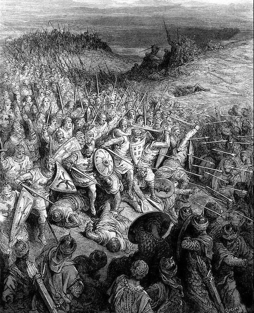
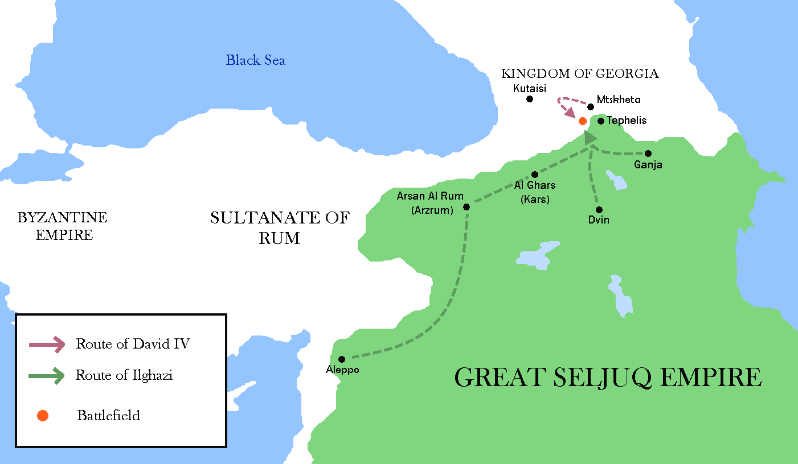
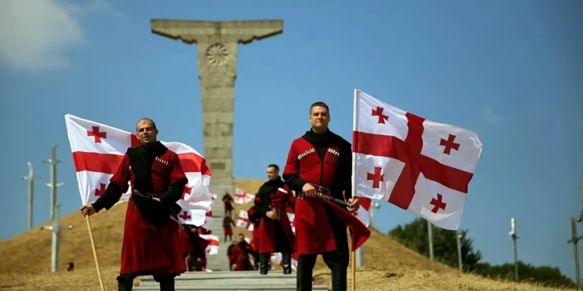

In 1121, the significant historical event was the Battle of Didgori, which took place between the Kingdom of Georgia and the Seljuk Turks. The battle is considered one of the most important events in Georgian history.
Date: The battle occurred on August 12, 1121.
Location: Near the Didgori River, about 25 kilometers west of Tbilisi, Georgia.
Combatants: The Kingdom of Georgia, led by King David IV (David the Builder), faced the forces of the Seljuk Turks.
Result: The Georgian army, despite being significantly outnumbered, achieved a decisive victory over the Seljuk Turks. This victory marked a turning point in the Georgian-Seljuk Wars.
It solidified David IV's rule and secured Georgia's independence from the Seljuk Turks. The victory allowed Georgia to regain control over important regions that had been under Seljuk occupation. It is seen as a pivotal moment in Georgia's history, ushering in a period of territorial expansion and cultural renaissance.
The Battle of Didgori is celebrated as a symbol of Georgian resilience and military prowess, and it played a crucial role in the establishment of a powerful and unified medieval Georgian state.
